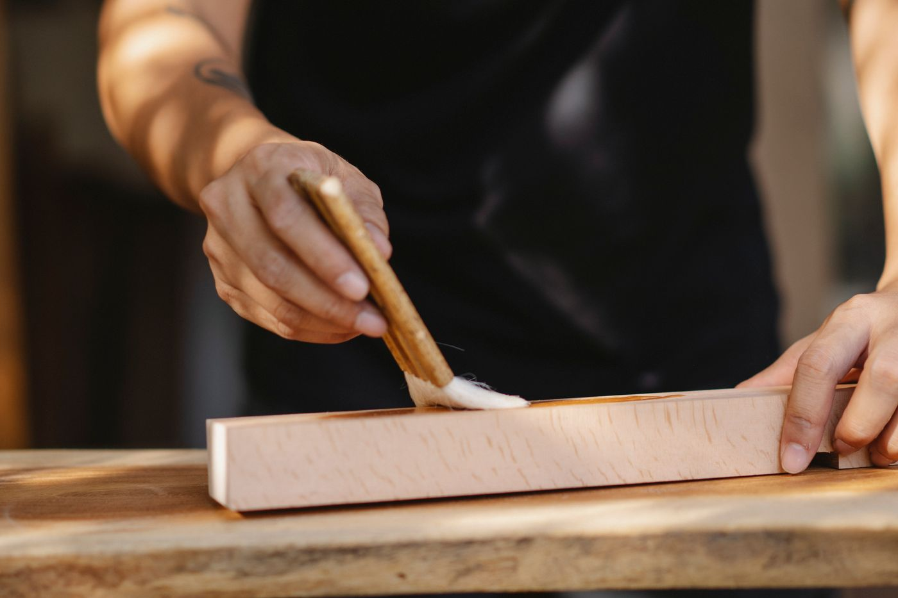

TROUBLEこのようなお悩みはありませんか
- 金箔の
くすみ - 漆の
はがれ - 金具の
破損 - 扉の
がたつき
長年お参りしてきたお仏壇は、ろうそくやお線香のすすで少しずつ汚れ、傷みが出てきます。
買い替えずとも、修繕で新品同様によみがえらせることができます。

PARTIAL部分修理
扉の建て付け、金具の交換、欠けた彫刻の補修など、気になる箇所だけを直します。お仏壇をお預かりせず、ご自宅で作業できる場合もございます。
費用の目安 1万円〜

OSENTAKUお洗濯（全体修復）
お仏壇を一つひとつの部品に分解し、洗浄・漆の塗り直し・金箔の押し直しを行います。木地師・塗師・箔押師など、それぞれの職人が手仕事で仕上げます。
費用の目安 30万円〜（大きさ・状態により異なります）
FLOW修繕の流れ
ご相談
お電話・メール・ご来店でお気軽にどうぞ。写真を送っていただくとスムーズです。
無料お見積り
ご自宅に伺い、状態を確認してお見積りをお出しします。
お預かり
ご本尊を丁寧にお預かりし、代わりの仮仏壇もご用意できます。
修繕
職人が工程ごとに手仕事で仕上げます。期間は約2〜3か月です。
お届け
ご自宅へお届けし、元どおりに設置いたします。
FAQよくあるご質問
他のお店で買ったお仏壇でも修繕できますか？
はい、どちらでお求めのお仏壇でも承ります。
ご法要に間に合わせたいのですが。
全体修復は2〜3か月かかります。日程が決まっている場合は、できるだけ早めにご相談ください。
見積りだけでも大丈夫ですか？
もちろんです。お見積り後にお断りいただいても費用はかかりません。